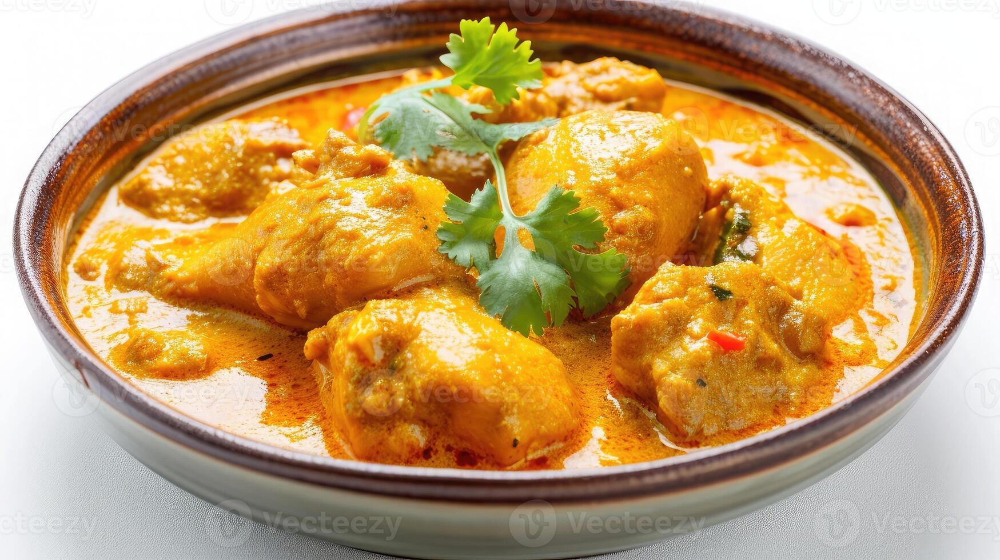

The recipe of Biryani

WHAT IS Chicken Korma, AND WHY DO I LOVE IT SO MUCH?
Chicken korma is a rich and flavorful curry bathed in a creamy, aromatic sauce. Tender pieces of chicken, marinated in yogurt and spices, are
simmered in a gravy fragrant with ginger, garlic, and warm spices like coriander and cardamom. The luxurious sauce gets its unique
creaminess from yogurt or heavy cream, while nuts like almonds or cashews sometimes add a touch of richness and texture. Unlike many
curries, kormas are known for their mild spice level, allowing the depth of flavor from the slow-cooked aromatics and yogurt to shine through.
It's a decadent dish fit for a special occasion, perfect for spooning over rice or dipping in fluffy naan bread.
Ingredients Required
- Chicken (1 kg / 2.2 lbs) - bone-in or boneless, cut into pieces
- Yogurt (1 cup)
- Ginger-garlic paste (2 tablespoons)
- Lemon juice (1 tablespoon)
- Vegetable oil (3 tablespoons)
- Whole spices: bay leaf (1), cloves (3), cardamom pods (3)
- Onion (1, large, sliced)
- Ground spices: coriander powder (1 tablespoon), turmeric powder (1 teaspoon), garam masala (1 teaspoon), red chili powder (1/2
teaspoon, adjust for spice)
- Salt to taste
- Water or chicken broth (1 cup)
- Heavy cream (1/2 cup, optional) - for a richer gravy
- Fresh cilantro (chopped, for garnish)
Instructions
- Marinate the chicken: In a large bowl, combine yogurt, ginger-garlic paste, lemon juice, green chilies (if using), and salt. Add the
chicken pieces and toss to coat them evenly. Cover and marinate in the refrigerator for at least 30 minutes, or preferably overnight
for deeper flavors.
- Heat oil and temper spices: Heat oil in a large pot or Dutch oven over medium heat. Add the bay leaf, cloves, and cardamom pods. Let
them sizzle for a few seconds until fragrant.
- Sauté the onions:Add the sliced onions and cook until softened and translucent, about 5-7 minutes.
- Add ground spices:Stir in the coriander powder, turmeric powder, garam masala, and red chili powder. Cook for another minute, stirring
constantly, to release the aromas of the spices.
- Incorporate the marinated chicken:Add the marinated chicken along with any leftover marinade in the bowl. Increase the heat to
medium-high and cook, stirring occasionally, until the chicken is browned on all sides.
- Simmer with liquid:Pour in the water or chicken broth. Bring to a boil, then reduce heat to low, cover the pot, and simmer for 20-25
minutes, or until the chicken is cooked through and tender.
- Garnish and serve:Turn off the heat and garnish your chicken korma with chopped fresh cilantro. Serve hot with rice, naan bread, or roti.